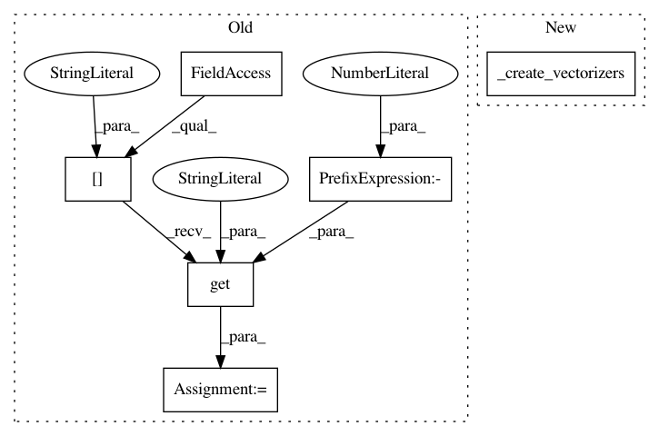

e8ca4622623c32e12bd51d937a95b426812c18fb,python/mead/tasks.py,ClassifierTask,_create_task_specific_reader,#ClassifierTask#,188
Before Change
for feature in self.config_params["features"]:
key = feature["name"]
vectorizer_section = feature.get("vectorizer", {"type": "token1d"})
vectorizer_section["mxlen"] = vectorizer_section.get("mxlen", self.config_params["preproc"].get("mxlen", -1))
vectorizer_section["mxwlen"] = vectorizer_section.get("mxlen", self.config_params["preproc"].get("mxwlen", -1))
if "transform" in vectorizer_section:
vectorizer_section["transform_fn"] = eval(vectorizer_section["transform"])
vectorizer = create_vectorizer(**vectorizer_section)
After Change
self.task = None
def _create_task_specific_reader(self):
vectorizers = self._create_vectorizers()
return baseline.create_pred_reader(vectorizers, clean_fn=self.config_params["preproc"]["clean_fn"],
trim=self.config_params["preproc"].get("trim", False),
**self.config_params["loader"])
In pattern: SUPERPATTERN
Frequency: 3
Non-data size: 6
Instances
Project Name: dpressel/mead-baseline
Commit Name: e8ca4622623c32e12bd51d937a95b426812c18fb
Time: 2018-09-18
Author: dpressel@gmail.com
File Name: python/mead/tasks.py
Class Name: ClassifierTask
Method Name: _create_task_specific_reader
Project Name: dpressel/mead-baseline
Commit Name: e8ca4622623c32e12bd51d937a95b426812c18fb
Time: 2018-09-18
Author: dpressel@gmail.com
File Name: python/mead/tasks.py
Class Name: TaggerTask
Method Name: _create_task_specific_reader
Project Name: dpressel/mead-baseline
Commit Name: 126f18f45f9c7f6ea005b933854423420e6e4545
Time: 2018-09-19
Author: dpressel@gmail.com
File Name: python/mead/tasks.py
Class Name: LanguageModelingTask
Method Name: _create_task_specific_reader